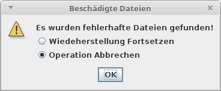
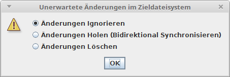
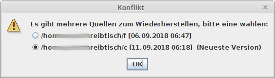

Diese Version ist eine Alpha Version; das bedeutet dass das Programm noch nicht sehr umfassend getestet und auf Fehler überprüft wurde.
Insbesondere der Programmteil der zum Retten von defekten Dateien zuständig ist wurde noch nicht getestet.
Synchronisation von Dateien auf einen USB Stick (mit FAT32 Dateisystem): Der Dateiname darf keine Sonderzeichen enthalten und darf nicht zu lange sein.
Es treten Probleme auf wenn keine Schreibberechtigung im Zielordner besteht.
Es treten Probleme auf wenn der Quellordner Unterordner hat auf die nicht zugegriffen werden darf.
Fssync steht als Abkürzung für "Filesystem Synchronisator". Das Programm ist in erster Linie ein Backup-Programm zur Sicherung von Dateien auf mehreren Datenträgern. Dieser Prozess läuft nicht automatisch. Es liegt in der Hand des Benutzers zu erwägen in welchem Intervall die Daten abgeglichen werden sollen.
Ein Segment hat einen Namen und 0 oder mehr Operationen.
Wenn ein Segment ausgeführt wird, werden alle enthaltene Operationen die verfügbar sind ausgeführt.
nach dem Hinzufügen oder ändern eines Segmentes werden die Segmente sortiert. Es werden Segmente die Operationen enthalten die als Zielverzeichnis das Quellverzeichnis (oder ein Unterverzeichnis) einer anderen Operation (in einem anderen Segment) haben, dieser vorangestellt.
Es ist vermutlich empfehlenswert dass bei der Planung des Datenflusses eher viele Segmente mit wenigen Operationen angelegt werden als wenige Segmente mit vielen Operationen.
Eine Operation hat einen Quell- und einen Zielordner. Wenn die Operation ausgeführt wird werden Ziel- und Quellordner verglichen und Synchronisiert (in den gleichen Zustand gebracht).
Des Weiteren kann eine Operation Ausnahmen (Ordner die im Quellverzeichnis ignoriert werden) haben.
Unidirektionale Synchronisation (Es wird nur vom Quell- ins Zielverzeichnis kopiert.)
Bsp.: /home/joe/Desktop >> /media/joe/backup1/Desktop
Bidirektionale Synchronisation (Es wird in beide Richtungen kopiert, wenn Änderungen und neue Dateien im Zielverzeichnis erkannt werden, werden sie auch in das Quellverzeichnis geholt.)
Bsp.: /home/joe/Music <> /media/joe/backup1/Music
Mehrere Operationen können das gleiche Quellverzeichnis haben. Ein Quellverzeichnis kann mehrere Zielverzeichnisse haben.
Ein Zielverzeichnis kann nur in einer einzigen Operation als Zielverzeichnis verwendet werden. Ein Zielverzeichnis kann nur ein Quellverzeichnis haben.
Das Zielverzeichnis von einer Operation kann das Quellverzeichnis einer anderen Operation sein.
Neben der ausführbaren Programmdatei wird beim ersten Start ein versteckter Ordner im Benutzerverzeichnis angelegt (Linux: "/home/*benutzer*/.fssync" / Windows: "C:\Users\*benutzer*\.fssync"). Darin werden die Einstellungen und die Synchronisationskonfiguration abgelegt. Dieser Ordner sollte auch gesichert werden. Sollte die Datei mit der Synchronisationskonfigration verloren gehen können die Operationen aber auch wieder nachgetragen werden.
Des Weiteren wird aus Darstellungsgründen ein Ordner namens "docs" erstellt um diese Hilfedatei mit Bildern und den Text für den "über"-Dialog zu speichern.
Um die Datenintegrität zu überprüfen, für die Bidirektionale Synchronisierung und die Versionierung von Dateien wird eine versteckte Datenbankdatei in den zu synchronisierenden Verzeichnissen abgelegt. Im Quellverzeichnis heisst sie ".fs.edit.db" zum Bearbeiten und im Zielverzeichnis wird sie als ".fs.db" als Duplikat gespeichert. Diese Dateien sind vom Synchronisationsprozess ausgeschlossen.
Beim Anlegen einer Operation sollte daher beachtet werden dass durch die häufigen Zugriffe auf die Datenbankdatei der Quelldatenträger der schnellere sein sollte.
Klick auf Nummer: Operation zum Bearbeiten öffnen.
Klick auf Pfad: Ordner im Dateiexplorer öffnen.
Klick auf Pfeil: Operation ausführen.
Checkbox Auswahl: Operation zum Ausführen Auswählen.
Oranger Rahmen: Operation sollte ausgeführt werden.
Segmente in ? Spalten anzeigen: Die Anzahl Spalten in der die Segmente grafisch Dargestellt werden.
Viele Informationen während der Synchronisation anzeigen: Es wird Information zu jeder behandelten Datei angezeigt.
Ordner für Logdateien: Der Ordner in dem allenfalls Logdateien abgelegt werden sollen.
Log immer Speichern: Es wird am Ende jeder Synchronisation eine Logdatei gespeichert.
Zusammenfassung vor Änderung zeigen: Es wird ein Dialog mit einer Zusammenfassung aller zu kopierenden und zu löschenden Dateien angezeigt. Es besteht die Möglichkeit Dateien an/abzuwählen, Konflikte zu bearbeiten und die Operation abzubrechen.
Dateibrowser: Das Kommando um einen Dateiexplorer zu öffnen.
Als Tray Icon Starten: Das Programm startet und wird als Trayicon angezeigt anstelle davon dass das Programmfenster geöffnet wird.
Ins Tray Schliessen: Das Programm wird beim Schliessen des Fensters im Traymenü fortgesetzt anstatt zu enden.
Ins Tray Minimieren: Das Programmfenster wird beim Minimieren versteckt und das Trayicon wird angezeigt.
Es erscheint ein Dialog der einen Namen fordert. Optional können Synchronisationsoperationen hinzugefügt, verändert oder entfernt werden.
Es wird ein Dialog geöffnet um eine neue Operation anzulegen
Quelle: das Quellverzeichnis.
Ziel: das Zielverzeichnis dessen Inhalt mit dem Inhalt des Quellverzeichnisses synchronisiert werden soll.
Liste: Verzeichnisse welche von der Synchronisation auszuschliessen sind. Die Einträge sind relativ zum Quellverzeichnis. Die Ausnahmen, die beim Speichern der Operation nicht mehr im Dateisysten existieren werden automatisch aus der Liste gelöscht.
+ Button: Verzeichnis Hinzufügen.
- Button: Ausgewähltes Verzeichnis Löschen.
Bidirektional Synchronisieren: Es werden Dateien in beide Richtungen abgeglichen und kopiert.
Priorität bei Konflikt:
Quelle: Es wird die Datei aus dem Quellordner bevorzugt und in das Zielverzeichnis kopiert.
Ziel: Es wird die Datei aus dem Zielordner bevorzugt und in das Quellverzeichnis geholt.
Neu: Es wird die neuere Datei bevorzugt.
Alt: Es wird die ältere Datei bevorzugt.
Änderungsdatum ignorieren wenn Prüfsumme und Länge gleichgeblieben: Es werden Dateien deren Modifikationsdatum nicht mit dem zuletzt synchronisierten Datum übereinstimmt zusätzlich anhand der Dateigrösse und einer Prüfsumme verglichen. Wenn sie identisch scheint wird sie ignoriert.
Letzte Synchronisierung: Der Zeitpunkt der letzten Synchronisierung.
Intervall: Das Intervall in Tagen, Stunden oder Minuten in dem die Operation ausgeführt werden sollte. "0" wenn sie nie fällig werden soll.
Erinnern: Es wird eine Nachricht aus dem Trayicon angezeigt wenn die Operation fällig wird. Wenn Intervall "0" ist dann wird Erinnern automatisch ausgeschaltet.
In der Liste ausgewählte Operation wird gelöscht.
Gewählte Operation wird zum Bearbeiten Geöffnet.
Das Speichern funktioniert im Moment nur wenn Ziel- und Quellordner verfügbar sind.
Die Operation wird gespeichert. Wenn keine Datenbankdatei im Zielordner gefunden wird, wird eine neue angelegt.
Das bestehende Zieldateisystem kann dazu eingelesen werden um bereits vorhandene Duplikate (in Quell- und Zieldateisystem) zu identifizieren und in der Datenbank zu registrieren.
Gewähltes Segment wird zum Bearbeiten Geöffnet.
Das geöffnete Segment wird Gelöscht.
Es wird ein Synchronisationsprozess für das ausgewählte Segment gestartet. Der Prozess sollte durchgängig abbrechbar sein, beim Kopieren wird die aktuelle Datei fertigkopiert bevor abgebrochen wird.
Alle verfügbaren Operationen werden ausgeführt.
Es wird das Zieldateisystem eingelesen und alle bekannten Dateien werden auf ihre Integrität überprüft.
Wenn beschädigte Dateien auftauchen wird versucht sie vom anderen Datenträger wiederherzustellen:
Wenn fortgesetzt wird, wird versucht die identische Datei wieder herzustellen. Wenn die Quelldatei sich verändert hat wird sie später verarbeitet.
Die Wiederherstellung von defekten Dateien wurde noch nicht getestet, es empfiehlt sich daher vermutlich die Operation hier abzubrechen und den defekten Datenträger zu ersetzen (angenommen der Datenträger ist defekt...).
Wenn bei der unidirektionalen Synchronisation Änderungen im Zieldateisystem festgestellt werden erscheint ein Dialog um das weitere Vorgehen abzufragen:
Änderungen Ignorieren: Es werden die Änderungen im Zieldateisystem nicht beachtet. Dabei könnte es passieren dass eine geänderte Datei im Zieldateisystem mit einer geänderten Datei aus dem Quelldateisystem überschrieben wird und Daten verloren gehen.
Änderungen Holen (Bidirektional Synchronisieren): Es wird die Bidirektionale Synchronisation eingeschalten um Änderungen ins Quelldateisystem zu holen.
Änderungen Löschen: Es werden alle im Zieldateisystem neuen Dateien gelöscht und geänderte Dateien mit der Quelldatei überschrieben.
Wenn Änderungen erkannt werden obwohl keine gemacht wurden kann man probieren in den Operationsoptionen "Änderungsdatum ignorieren wenn Prüfsumme und Länge gleichgeblieben" zu aktivieren.
In Folge der Integritätsprüfung werden alle leeren Verzeichnisse im Zielverzeichnis gelöscht.
Wenn defekte Dateien erkannt werden, wird versucht diese wiederherzustellen. In der Zusammenfassung werden die Dateien dann nochmals angezeigt.
Es wird das Quelldateisystem eingelesen um neue und geänderte Dateien zu finden.
Es werden alle Dateien in der Datenbank darauf untersucht ob sie an beiden Orten vorhanden sind. Wenn eine Datei im Quellverzeichnis fehlt wird sie im auch Zielverzeichnis gelöscht. Bei bidirektionalem Synchronisieren werden auch die Dateien welche im Zielverzeichnis fehlen im Quellverzeichnis gelöscht.
Wenn in den Optionen ausgewählt oder wenn Konflikte oder fehlerhafte Dateien gefunden wurden wird die Zusammenfassung angezeigt.
Es können Dateien aus- und abgewählt werden. Wenn zu kopierende Dateien abgewählt werden, werden diese für diese Synchronisation ignoriert und beim nächsten Synchronisieren wieder erfasst.
Eine zu löschende abgewählte Datei, wird allerdings wiederhergestellt; *Immer dran denken dass dieses Feature erst funktioniert nachdem die Datei zuvor bereits synchronisiert wurde... * ;)
Grün: Datei wird kopiert
Grau: Datei wird ignoriert
Rot: Datei wird gelöscht
Grün auf Gelb: Es besteht ein Konflikt, diese Datei wird kopiert
Gelb auf Rot: Es besteht ein Konflikt, diese Datei wird überschrieben und Änderungen gehen verloren.
Weiss auf Grau: Es besteht ein Konflikt der ignoriert wird, es bleiben beide Versionen bestehen.
Es wird zuerst die Liste mit den zu löschenden, danach die Liste mit zu kopierenden Dateien abgearbeitet.
Falls ein Quelldatenträger ausfällt können mit der Wiederherstellenfunktion die Dateien vom Zieldatenträger zurück in den Quellordner geholt werden. Wenn eine Operation wiederhergestellt wird werden alle Dateien vom Zieldatenträger geholt; dabei könnten Dateien mit älteren Versionen überschrieben werden. Daher sollte diese Funktion normalerweise nur ausgeführt werden wenn zum Beispiel ungewollte Änderungen wie Schäden im Quelldateisystem aufgetreten sind oder ein Datenträger erneuert werden musste oder nachdem das Betriebssystem neu installiert wurde.
Wenn ein Segment mehrere Operationen mit dem selben Quellverzeichnis zum Wiederherstellen hat erscheint ein Dialog um eine der Operationen auszuwählen:
Nur beschädigte Dateien Wiederherstellen: Es werden nur ungeänderte Dateien (Änderungsdatum) welche eine andere Grösse oder Prüfsumme als in der Datenbank haben gesucht.
Nur geänderte Dateien Wiederherstellen: Es werden nur geänderte Dateien (Änderungsdatum der Datei im Quellordner) gesucht.
Alle Dateien Wiederherstellen: Es werden alle Dateien aus der Datenbank Wiederhergestellt.
Neue Dateien löschen: Dateien die seit der letzten Synchronisation neu im Quelldateisystem erschienen sind werden gelöscht.
Bevor der Wiederherstellungsprozess durchgeführt wird der Zusammenfassungsdialog angezeigt. Es wird hier nicht nach Konflikten gesucht. Die Zusammenfassung wird beim Wiederherstellen immer wenn es etwas zu tun gibt angezeigt. So kann der Wiederherstellungsprozess immer abgebrochen werden.
Dateien die zum Löschen abgewählt werden, werden hier ignoriert.
Es werden auch hier zuerst die zu löschenden und dann die zu kopierenden Dateien abgearbeitet.